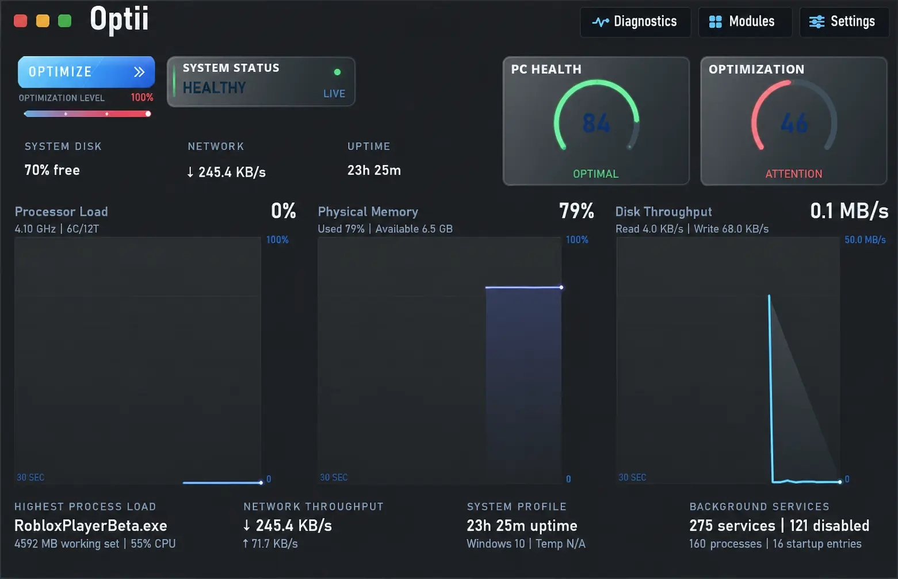
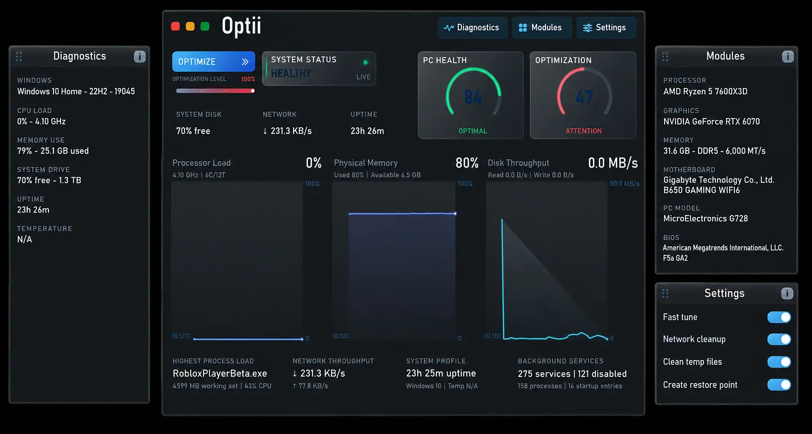

Diagnose
Review live system activity, hardware information, storage capacity, memory pressure, uptime, and background-service load from a single dashboard.
See what your system is doing, understand what is holding it back, and make informed improvements without digging through scattered Windows menus.

Optii starts by presenting the information that matters in one place: processor load, physical memory use, disk activity, network throughput, uptime, background services, core hardware details, and an overall PC health reading. Instead of treating every computer the same, it gives you a practical snapshot of how your machine is functioning right now.
From there, Optii helps reduce avoidable overhead and clean up the parts of Windows that can become cluttered over time. Its modules are organized so you can understand the purpose of each action, apply the changes that fit your system, and create a restore point before optimization.
Review live system activity, hardware information, storage capacity, memory pressure, uptime, and background-service load from a single dashboard.
Health and optimization indicators turn dense system information into a quick status check, while detailed panels keep the underlying numbers visible.
Use dedicated modules for system cleanup, startup reduction, temporary-file cleanup, and practical Windows tuning instead of applying an unexplained bundle of changes.
Create a restore point and choose what to run. Optii is designed to make system changes understandable and manageable, not mysterious.
The expanded Optii view keeps system diagnostics on one side and optimization controls on the other. Check the hardware Optii detected, review current workload, and decide which maintenance actions make sense without leaving the main experience.

Track current CPU workload and physical-memory usage so you can spot pressure that may affect responsiveness while gaming or multitasking.
See real-time throughput instead of guessing whether storage or network activity is contributing to slowdowns.
Review running services, disabled items, active processes, and startup entries to understand what Windows is carrying in the background.
Keep processor, graphics, memory, motherboard, Windows, storage, and BIOS information accessible for compatibility checks and support.
Optii brings readable diagnostics and practical optimization tools together in one Windows application.